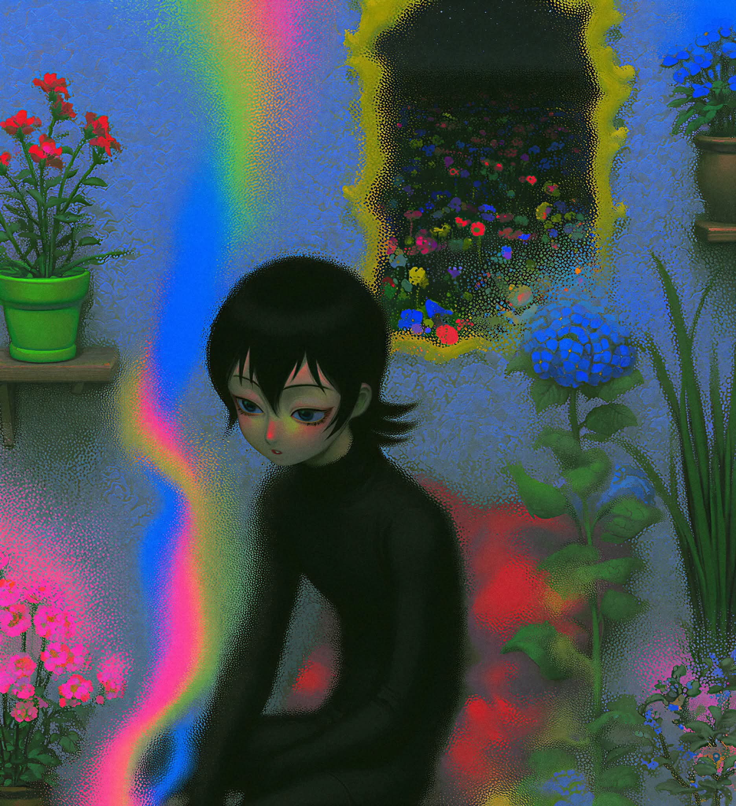
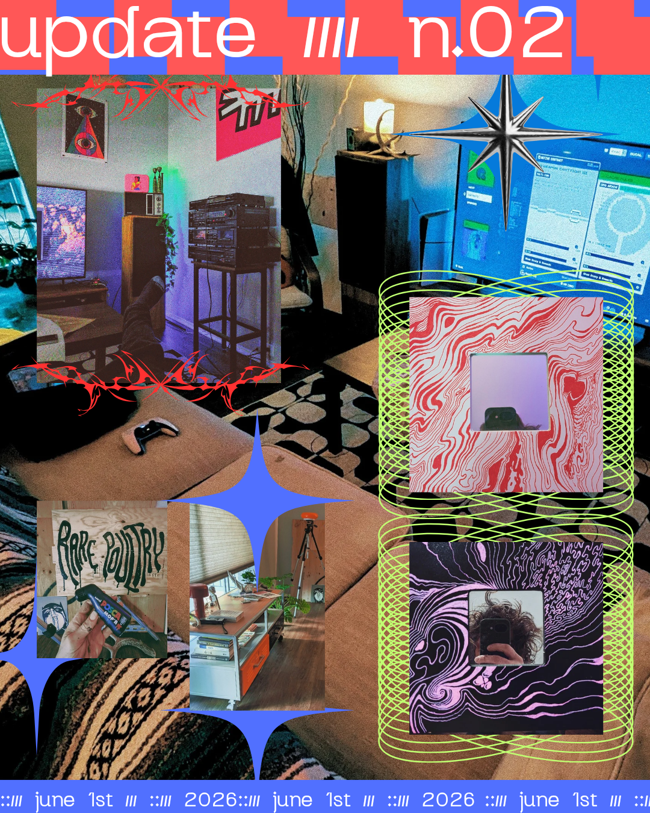
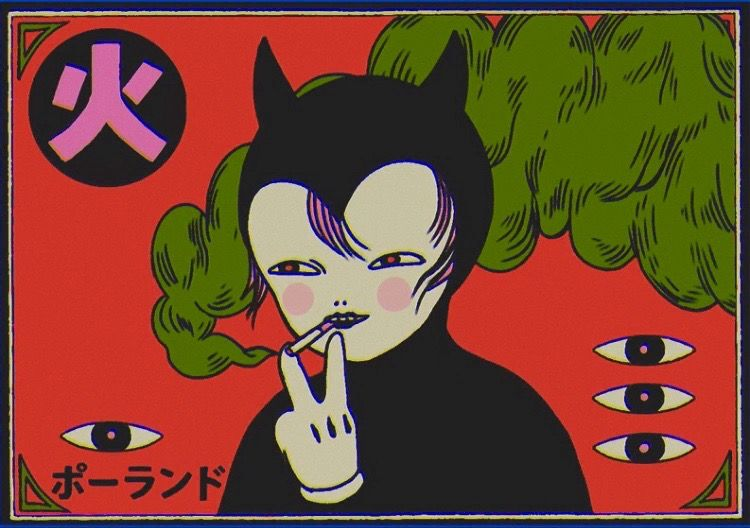

PSYCH / 01

RAINBOW AURAA1.2
PSYCH / 02

DITHER BLOOMB6
ZINE / 03

COLLAGE / DIYN.02



Hikari-Shimoda-adjacent. Black-clad figures dissolving into chromatic rainbow auras + vivid wildflower fields. The neon is emotional, not technical — bleed, glow, oversaturation. Pull as hero imagery behind glitch type.
Reaction-diffusion Turing fields + sacred-geometry cosmogram plates as ambient hero backdrops. Hi/lo comic illustration (cat, all-seeing eyes, kanji) for stickers, splash, mascot moments.
Heavy ordered-dither grain over deep blues/greens. Rainbow light-leak columns. Soft focus + hard pixel noise coexist. This is the "degraded signal" texture — apply as overlay on photography.
Red/blue checker header, neon-green spirograph loops, tribal/gothic display, ticker footer (::/// june 1st ///), torn-photo collage. The brand's loud, lo-fi voice.